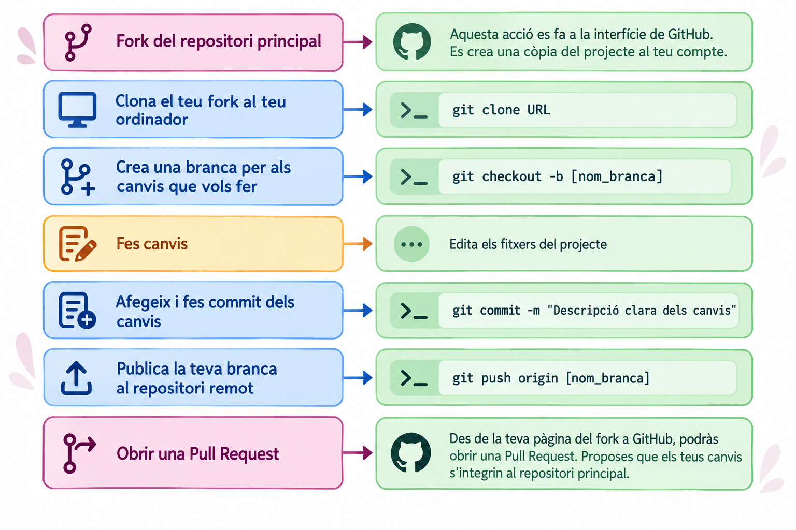
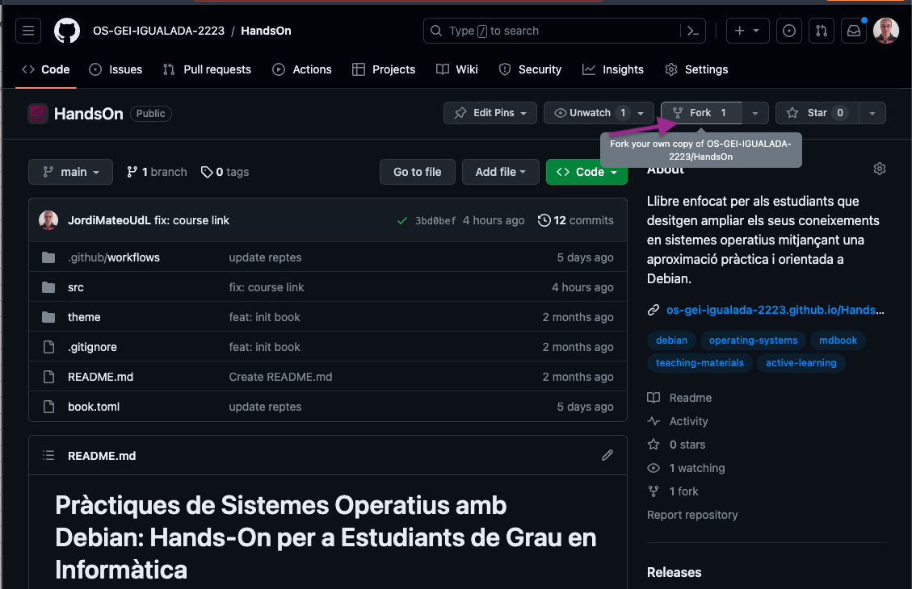
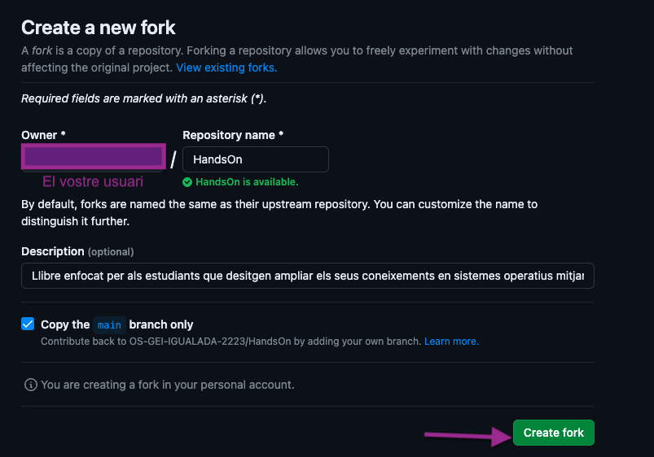
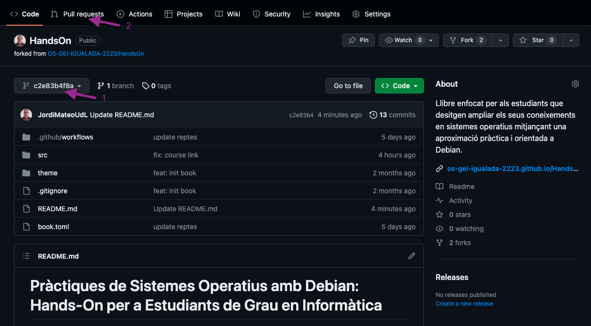
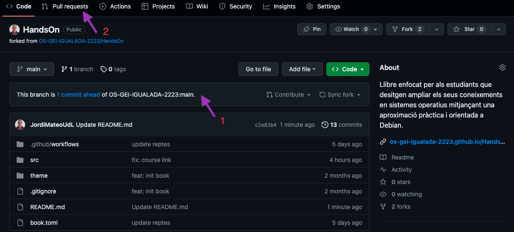
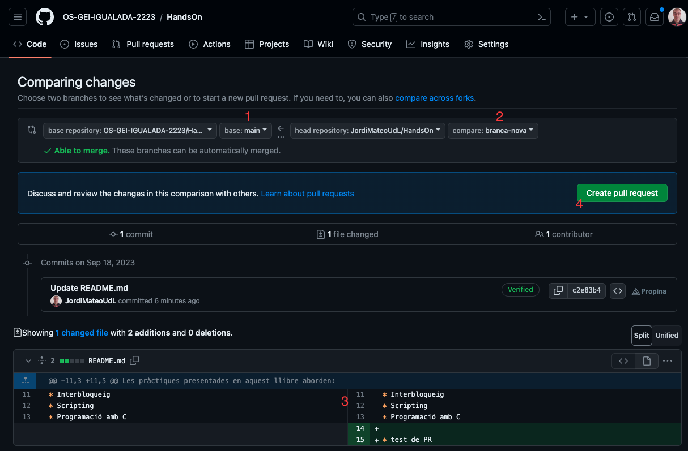

Contribuir als materials
Participa en la millora dels materials oberts de l’assignatura
Els materials d’aquesta assignatura es desenvolupen seguint una filosofia de codi obert (open source): els materials poden ser revisats, millorats, ampliats i corregits amb la participació de la comunitat.
Com a estudiant, pots formar part d’aquest procés i contribuir directament a la millora dels materials que utilitzaran altres estudiants en el futur.
Aquesta activitat també et permet obtenir fins a 0,5 punts addicionals sobre la qualificació final de l’assignatura.
Contribuir no significa simplement modificar un fitxer o enviar un pull request.
Una contribució és una millora concreta, justificada i útil per al projecte. Pot consistir, per exemple, en:
- crear un exercici o exemple nou;
- ampliar o aclarir una explicació;
- corregir una errata o un error tècnic;
- actualitzar informació que hagi quedat obsoleta;
- corregir un enllaç trencat;
- millorar la documentació;
- detectar i solucionar un problema que pugui afectar altres estudiants.
La contribució ha d’aportar valor real al material docent.
Una filosofia basada en l’Open Source
El desenvolupament open source es basa en una idea senzilla: els projectes poden millorar gràcies a la participació de diferents persones.
En lloc que una única persona sigui responsable de detectar tots els errors, escriure tot el contingut i mantenir-lo actualitzat, altres persones poden proposar millores.
En aquesta activitat aplicaràs el mateix model que s’utilitza en molts projectes de programari:
- Parteixes d’una còpia del projecte (fork).
- Treballes en una branca independent.
- Fas i documentes els teus canvis.
- Puges els canvis al teu repositori.
- Proposes incorporar-los al projecte original mitjançant un Pull Request.
- El responsable del projecte revisa la proposta.
- Si la contribució és adequada, es pot incorporar al projecte principal.
Això permet experimentar i proposar canvis sense modificar directament el repositori original.

Quan obres un Pull Request, no estàs modificant directament els materials de l’assignatura.
Estàs fent una proposta de canvi perquè el responsable del projecte la pugui revisar.
Aquesta és una de les idees fonamentals del desenvolupament open source: els canvis es poden proposar, discutir, revisar i, finalment, acceptar o rebutjar.
El procés de contribució
1. Fes un fork del repositori
El primer pas és crear una còpia del repositori de l’assignatura al teu compte de GitHub.
Aquesta còpia s’anomena fork.
El fork et permet treballar sobre el projecte sense tenir permisos d’escriptura sobre el repositori original.
A la pàgina principal del repositori trobaràs el botó Fork.

Selecciona el teu compte de GitHub com a propietari del nou repositori.

Un cop creat, disposaràs d’una còpia del projecte dins del teu compte.
El fork separa el teu espai de treball del projecte original.
Pots experimentar, modificar fitxers i provar idees sense afectar els materials que utilitzen la resta d’estudiants.
2. Clona el teu fork
Ara has de descarregar el teu fork al teu ordinador.
Des de GitHub, copia l’URL del teu repositori i executa:
git clone URLPer exemple:
git clone https://github.com/el-teu-usuari/amsa.gitA continuació, entra al directori del projecte:
cd amsaA partir d’aquest moment treballaràs sobre una còpia local del repositori.
També és possible fer alguns canvis directament des de la interfície web de GitHub. Tanmateix, si vols treballar de manera habitual amb els materials Quarto, és recomanable tenir el repositori clonat localment.
Els materials d’aquesta assignatura canvien sovint. Si treballes durant dies o setmanes sobre el mateix fork, sincronitza’l periòdicament amb el repositori original abans de començar una contribució nova:
git remote add upstream URL-del-repositori-original
git fetch upstream
git merge upstream/mainFer-ho evita conflictes innecessaris quan obris la Pull Request i redueix el risc que la teva contribució es basi en una versió ja desactualitzada dels materials.
3. Crea una branca per al teu canvi
Abans de modificar els fitxers, crea una branca (branch) específica per a la teva contribució.
git checkout -b nom-de-la-brancaPer exemple:
git checkout -b millora-exercici-processosLa branca permet mantenir el teu canvi separat de la resta del projecte.
Sempre que sigui possible, procura que una branca representi una contribució concreta.
Per exemple:
correccio-enllac-unitat-2
és preferible a:
canvis
Un nom descriptiu facilita la revisió i permet entendre ràpidament quin és l’objectiu de la branca.
4. Fes els canvis
Ara pots modificar els materials.
Pots:
- crear nous continguts;
- modificar explicacions;
- afegir exemples;
- crear exercicis;
- corregir errates;
- actualitzar informació;
- millorar la documentació.
Si treballes amb els materials Quarto, pots previsualitzar el resultat localment amb:
quarto previewLa previsualització permet comprovar que els canvis es visualitzen correctament abans d’enviar-los.
També pots editar els fitxers .qmd directament des de GitHub mitjançant l’editor web. Aquesta opció permet crear una branca amb els canvis i iniciar posteriorment el procés de Pull Request.
Abans d’enviar la contribució, comprova que:
- el contingut és correcte;
- els exemples funcionen;
- no has introduït errates;
- els enllaços funcionen;
- el format es visualitza correctament (fes
quarto preview, no només una lectura del.qmd); - si has afegit un bloc de tipus
::: {.classe}, la classe existeix realment a la llista de components admesos — una classe inventada es renderitza sense estil, sense avisar-te de l’error; - no has pujat fitxers generats en renderitzar (
.aux,.log, carpetes_files/, PDFs o HTML exportats) que no formen part del codi font; - el canvi no modifica accidentalment altres parts dels materials.
5. Fes commit dels canvis
Quan els canvis estiguin preparats, registra’ls amb un commit.
git add .I després:
git commit -m "Descripció clara dels canvis"Per exemple:
git commit -m "Millora l'exemple de processos"Un bon missatge de commit ha de permetre entendre què s’ha modificat.
Evita missatges poc informatius com:
canvis
o:
coses
6. Puja la branca al teu GitHub
Ara has de publicar la branca al teu fork:
git push origin nom-de-la-brancaPer exemple:
git push origin millora-exercici-processosLa branca i els seus commits quedaran disponibles al teu repositori de GitHub.
7. Obre un Pull Request
Aquest és el pas més important del procés.
Un Pull Request (PR) és una proposta perquè els canvis que has fet al teu fork siguin incorporats al repositori original.
Des del teu repositori, selecciona la branca on has fet els canvis i inicia un nou Pull Request.

També pots seleccionar directament la branca amb els teus canvis i iniciar el Pull Request des de la interfície de GitHub.

8. Revisa l’origen i el destí dels canvis
GitHub mostrarà una comparació entre:
- el repositori principal, on vols incorporar els canvis;
- el teu fork, on has desenvolupat la modificació;
- la branca que conté els teus canvis.
Comprova especialment que la direcció sigui correcta.
En aquest cas:
Repositori principal
↓
Branca amb la teva contribucióGitHub també et mostrarà si els canvis es poden integrar automàticament.

Si tot és correcte, fes clic a Create pull request.
9. Explica bé la teva contribució
Un Pull Request no hauria de limitar-se a dir:
“He fet alguns canvis.”
La descripció ha d’ajudar el professorat a entendre què has fet, per què ho has fet i quin valor aporta.
Una bona descripció pot seguir aquesta estructura:
Què he canviat? Explica breument quins fitxers o materials has modificat.
Per què ho he canviat? Explica quin problema has detectat o quina necessitat resol el canvi.
Quin valor aporta? Explica com millora el material per als estudiants.
Com ho he comprovat? Si és aplicable, explica quines proves has fet o com has verificat que el canvi funciona.
Millora de l’exemple de processos de la Unitat 2
He actualitzat l’exemple perquè utilitzava una comanda que ja no correspon amb la versió actual de Debian.
He substituït l’exemple per una alternativa compatible i he actualitzat l’explicació associada.
He comprovat el procediment en una màquina virtual amb Debian i he verificat que les comandes funcionen correctament.
Què passa després del Pull Request?
Quan envies una PR, el professorat revisarà la proposta.
La revisió pot incloure:
- correcció tècnica;
- qualitat del contingut;
- claredat de l’explicació;
- utilitat pedagògica;
- coherència amb la resta dels materials;
- qualitat de la documentació;
- possibles efectes sobre altres parts del projecte.
El professorat pot:
- acceptar la contribució;
- demanar modificacions abans d’acceptar-la;
- comentar o discutir alguns aspectes;
- rebutjar-la si no és adequada o no aporta prou valor.
Això forma part del funcionament normal d’un projecte open source.
El Pull Request és el mecanisme de revisió i proposta.
La incorporació definitiva del canvi depèn de la revisió del projecte.
Com s’avalua la contribució?
Pots obtenir fins a 0,5 punts addicionals sobre la nota final.
La puntuació no depèn simplement del nombre de Pull Requests que enviïs. Es valorarà principalment la qualitat i l’impacte de la contribució.
Entre altres aspectes, es tindrà en compte:
| Aspecte | Què es valora |
|---|---|
| Rellevància | El canvi resol un problema o necessitat real? |
| Qualitat | El contingut és correcte, clar i ben elaborat? |
| Impacte | La millora pot ser útil per a altres estudiants? |
| Rigor | La informació i els exemples són tècnicament correctes? |
| Documentació | El canvi està prou explicat i justificat? |
| Integració | És coherent amb l’estructura i l’estil dels materials? |
Enviar un Pull Request no garanteix l’obtenció del bonus.
Només es valoraran les contribucions que siguin acceptades pel professorat i que aportin un valor suficient als materials.
Una modificació purament cosmètica, arbitrària o innecessària pot no ser considerada una contribució avaluable.
Contribueix com si el projecte fos teu
Abans d’obrir una PR, pregunta’t:
Si un altre estudiant hagués de fer servir aquest material demà, aquesta modificació realment li seria útil?
Si la resposta és sí, probablement tens una bona contribució.